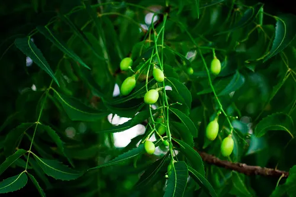

Neem Tree
History Ancient medicinal tree...
Uses Ayurveda, Pest Control.
A digital database of Lalita ben's farm!
Select a department above view different sections of the farm
Scan a plant tag or select from the list below.
Waiting for a QR scan or selection...

History Ancient medicinal tree...
Uses Ayurveda, Pest Control.

Genome 439 Mb...
Folklore King of fruits.
We are currently documenting the wildlife and livestock on the farm. Check back later!